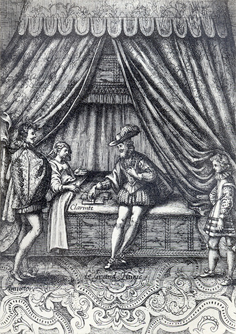
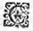
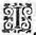

L'Astrée
d'Honoré d'Urfé
Troisième partie
Livre 4

Amintor regarde Euric prendre les papiers qui se trouvent sur le lit de Clarinte
(III, 4, 152 verso)
L'AstréeIII, 4. Édition Vaganay**, 1925Amintor regarde Euric prendre les papiers qui se trouvent sur le lit de Clarinte
(III, 4, 152 verso)
(Voir Illustrations)
Gravure signée Guélard
Amintor regarde Euric prendre les papiers qui se trouvent sur le lit de Clarinte
(III, 4, 152 verso)
L'AstréeIII, 1. Édition Vaganay**, 1925Gravure signée Guélard
Amintor regarde Euric prendre les papiers qui se trouvent sur le lit de Clarinte
(III, 4, 152 verso)
(Voir Illustrations)
Éd. de 1619, 118 verso sic 116 verso.
Éd. Vaganay, III, p. 159.

C'
Est à la grandeur de mon affection et non pas de mon mérite que vous avez voulu mesurer la faveur que j'ai reçue de vous. Mais à quoi faut-il que j'égale le remerciement que je vous en dois ? Sera-ce point, pour ne vous être redevable, à cette même grandeur de mon affection ? Mais étant infinie, avec quoi se pourrait-elle égaler ? Avec ce qui est, comme elle, infini. Et telle est la volonté que j'ai de vous faire service, laquelle je vous supplie de recevoir comme celle de la personne
du monde qui vous aime le plus, et qui y est aussi la plus obligée.
P
Rès d'elle sur son lit un
bouquet
j'aperçus,
Que d'envie aussitôt contre lui je conçus !
Que d'envie aussitôt contre lui je conçus !
AMour cueillit ces
fleurs
où prend la belle Aurore
Ses
Ses
roses, ses
œillets, et ses
lystour à tour,
Qu'après, ouvrant le Ciel et les portes du jour,
En tombant de ses mains, tout l'Orient adore.
En tombant de ses mains, tout l'Orient adore.
Belles fleurs que le Ciel de tant de grâce honore,
Qu'heureuses vous serez en un si beau séjour !
Vous mourrez, il est vrai, mais sur l'autel d'amour,
Autel où tous les cœurs voudraient mourir encore.
D'avoir changé de lieu, qu'il ne vous fâche pas,
Car vous mourrez bien mieux que vous n'êtes pas nées !
Ô Dieu ! qui n'élirait avec vous ce trépas ?

J
E la vis dans le lit, un
bouquetauprès d'elle :
Ô combien en ces dons le Ciel est envieux !
Si j'étais comme vous, auprès de cette belle,
Quel plus heureux séjour voudrais-je entre les Dieux ?
Ô combien en ces dons le Ciel est envieux !
Si j'étais comme vous, auprès de cette belle,
Quel plus heureux séjour voudrais-je entre les Dieux ?
Ô
fleurs! si vous l'aimiez comme j'aime ses yeux,
La place où je vous vois à quelqu'autre nouvelle,
Vous ne changeriez pas sous l'espoir d'être mieux.
Mais la fortune en nous n'est-elle pas cruelle ?
La place où je vous vois à quelqu'autre nouvelle,
Vous ne changeriez pas sous l'espoir d'être mieux.
Mais la fortune en nous n'est-elle pas cruelle ?
Q
Uand enfin des Guerriers, celui qui tout dispose
Voulut qu'en son midi se couchât le Soleil,
Et que jamais depuis
l'on n'en vît le réveil,
Ainsi disait
η Daphnide au cercueil qu'elle arrose.
Puisqu'ici, mon Soleil, ta lumière est enclose,
Puisque c'est pour toujours qu'on te cache à mon œil,
Reçois ces tristes vœux, que, témoins de mon deuil,
Je ne romprai jamais qu'en toi je ne repose
η.
Les pleurs qui de mes yeux voileront le flambeau,
Les plaisirs que j'enterre en ton même tombeau,
Les désirs étouffés dont fut mon âme atteinte,
L'amour qu'en un regret je change
Témoigneront en moi de nos pures Amours !
L'ardeur vive à jamais, étant la flamme éteinte.
Les plaisirs que j'enterre en ton même tombeau,
Les désirs étouffés dont fut mon âme atteinte,
L'amour qu'en un regret je change
η pour toujours,Témoigneront en moi de nos pures Amours !
L'ardeur vive à jamais, étant la flamme éteinte
HARANGUE
d'Alcidon.d'Alcidon.
Fin du quatrième livre.

Livre 3

Livre 5
Référence électronique :
document.write('"'+document.title.substr(0, document.title.indexOf("-")-1)+'". '+"Dernière mise à jour : "+ExtractDate(document.lastModified)+".")Deux visages de L'Astrée.
©2005-2020 E. Henein.
URL :
var today = new Date();
document.write(document.URL +
"<br>Consulté le : " + today.toLocaleDateString("fr-FR") + ".");
var _gaq = _gaq || [];
_gaq.push(['_setAccount', 'UA-19288475-1']);
_gaq.push(['_trackPageview']);
(function() {
var ga = document.createElement('script'); ga.type = 'text/javascript'; ga.async = true;
ga.src = ('https:' == document.location.protocol ? 'https://ssl' : 'http://www') + '.google-analytics.com/ga.js';
var s = document.getElementsByTagName('script')[0]; s.parentNode.insertBefore(ga, s);
})();
Deux visages de L'Astrée.
©2005-2019 Eglal Henein. Creative Commons 4 
Édition critique de la première partie de L'Astrée (1607, 1621)
mise en ligne le 9 avril 2007
Édition critique de la deuxième partie de L'Astrée (1610, 1621)
mise en ligne le 10 octobre 2010
Édition critique de la troisième partie de L'Astrée (1619, 1621)
mise en ligne le 1er novembre 2014
Édition critique de la quatrième partie de L'Astrée (1624)
mise en ligne le 15 janvier 2019
document.write("Dernière mise à jour : "+ExtractDate(document.lastModified))